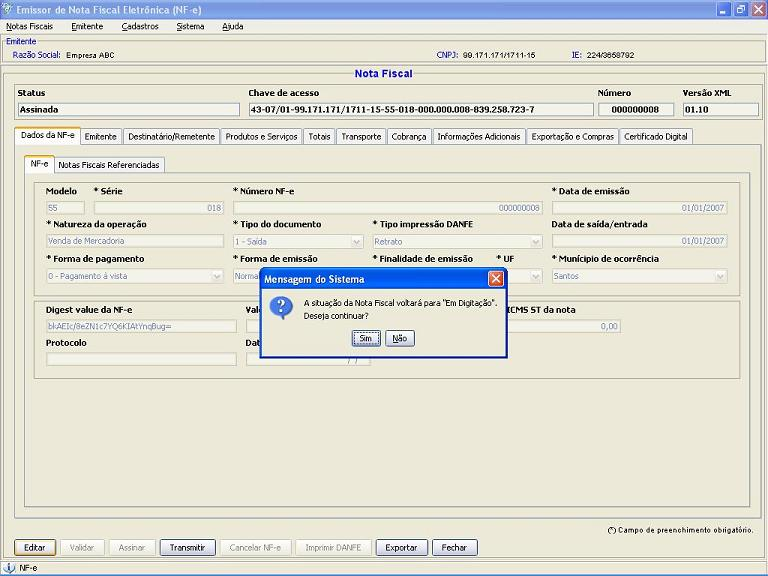

Software Emissor NF-e
Detalhes/Editando uma Nota
Fiscal
eletrônica (NF-e)
Opção para apresentar os detalhes
da Nota Fiscal eletrônica e também permitir a sua
edição.
Pré-condição:
-Um emitente
deverá estar previamente iniciado.
- Acessar o menu: Notas Fiscais -> Gerenciar
Notas
- Realizar a
pesquisa pela Nota a ser editada.
- Selecionar a nota clicar em Detalhar para apresentar os dados da NF-e
- Para a edição, clicar em Editar. Após realizar as alterações necessárias, clicar em Alterar para salvar as alterações.
OBSERVAÇÃO:
SOMENTE NOTAS DE SITUAÇÃO EM DIGITAÇÃO,
VALIDADA, ASSINADA (SENDO O TIPO NORMAL OU SENDO DO TIPO ASSINADA SEM O
DANFE IMPRESSO) OU REJEITADA PODERÃO SER EDITADAS. NAS DEMAIS
SITUAÇÕES, NÃO É PERMITIDA A
EDIÇÃO, SOMENTE O DETALHAMENTO.
OBSERVAÇÃO 2: CASO A
NF-E A SER EDITADA ESTÁ EM SITUAÇÃO DIFERENTE DE
EM DIGITAÇÃO, O SOFTWARE EMISSOR IRÁ REQUERER A
CONFIRMAÇÃO PARA QUE A NOTA VOLTE PARA A
SITUAÇÃO EM DIGITAÇÃO. NOTAS EM
DIGITAÇÃO DEVERÃO PASSAR NOVAMENTE PELO PROCESSO
NORMAL DE VALIDAÇÃO, ASSINATURA E TRANSMISSÃO.
Caso a NF-e estiver em situação diferente de "Em
Digitação", o Software solicitará a
confirmação:
